前期准备
开始
手机连接电脑，USB 连接方式选择『传输文件』：
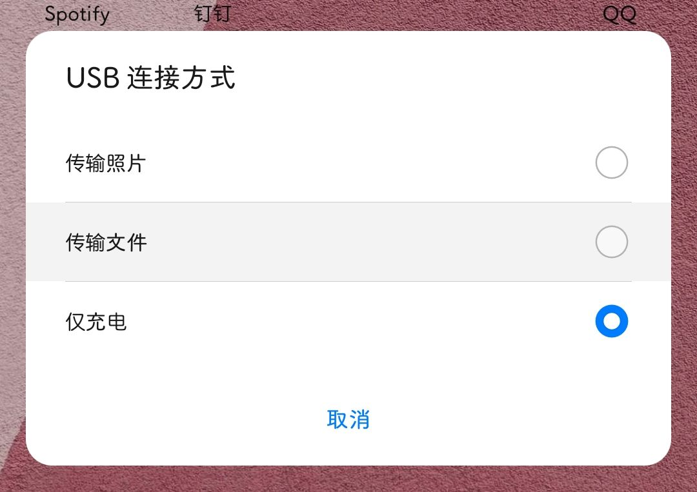
解压下载的 ADB 工具包，在目录输入cmd， 回车打开 命令提示符：
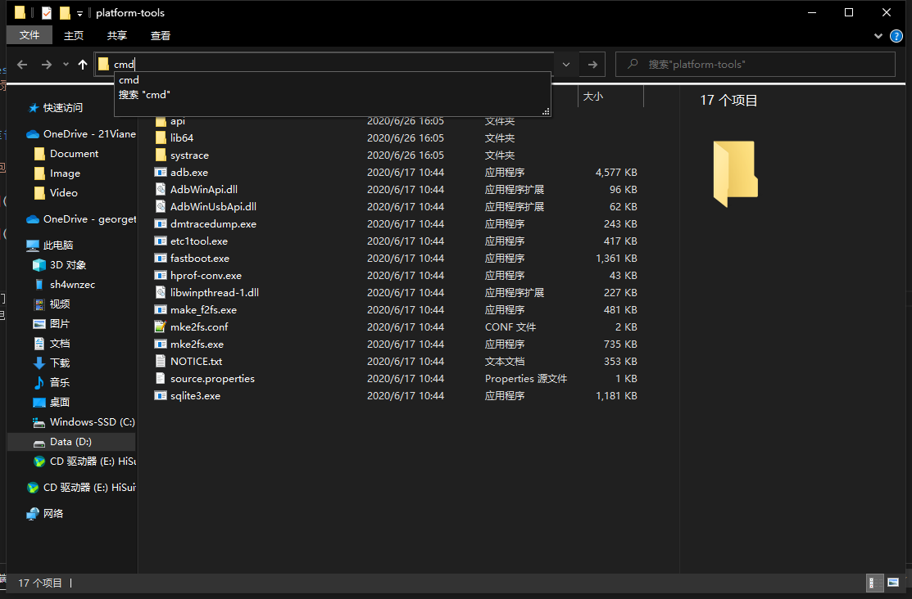
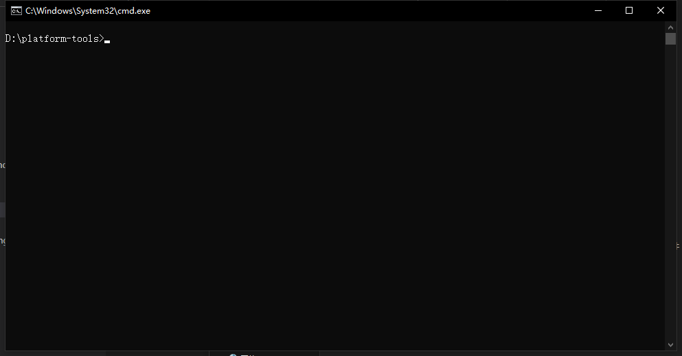
输入 adb devices，可以查看当前连接的手机设备；
接着输入adb tcpip 5555 把端口号改为 5555：
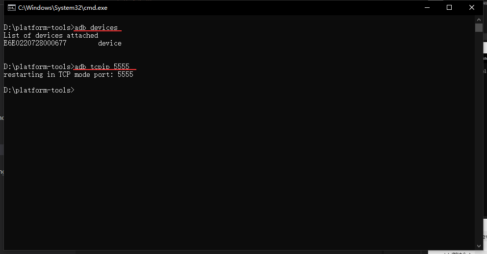
打开刚刚下载好的『Shizuku』，在「通过无线调试启动」中选择 启动：
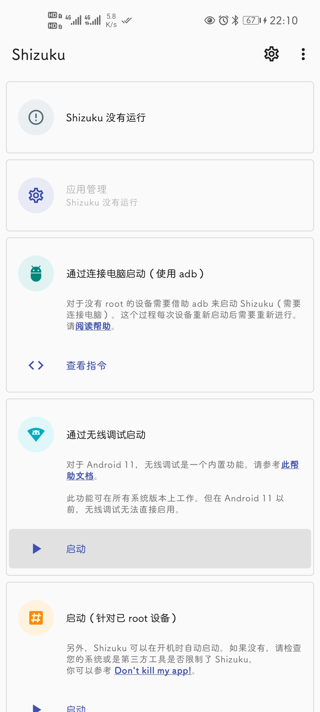
如有弹窗，点击始终允许，并点击确定，之后等程序自动运行(如果卡住没动，可以重复前两步步骤)：
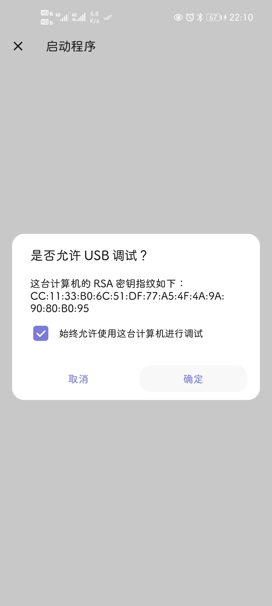
成功之后会显示 Shizuku 正在运行，点击已授权 0 个应用：
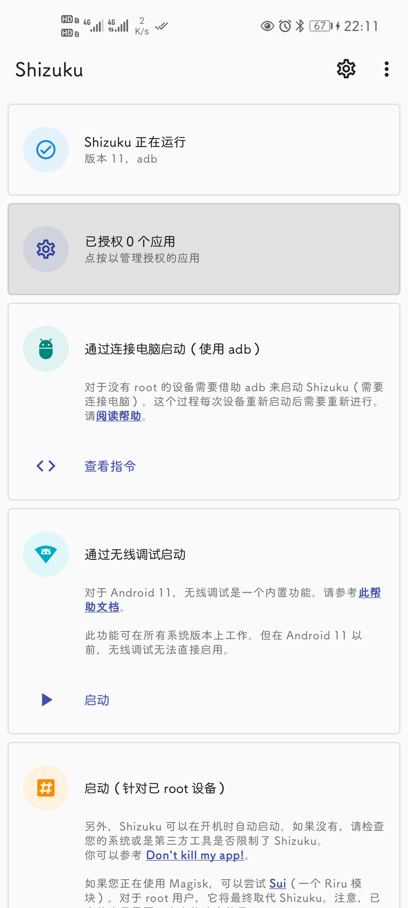
把 App Ops 的开关打开：
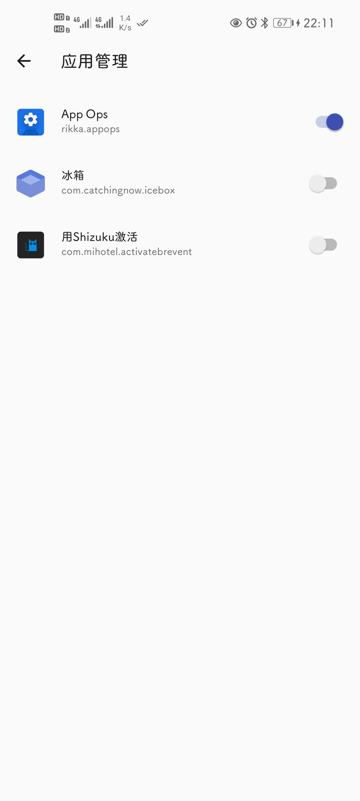
这时我们打开 App Ops，并选择 Shizuku 模式，点击继续：
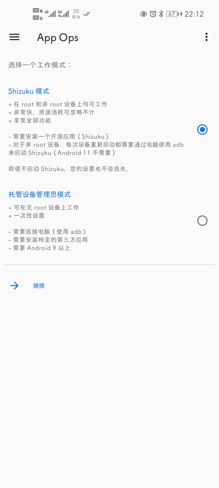
这样，我们就可以完完全全的开始控制应用的各个权限了：
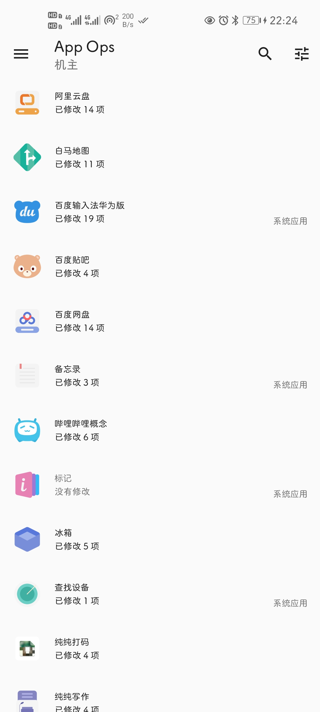
对于不想给的权限，我们可以直接选择 拒绝，但是如果当拒绝某一项权限导致应用不可用的时候，我们可以选择 忽略，这样就可以把一个空的信息传递给对方，而继续使用应用不受影响。
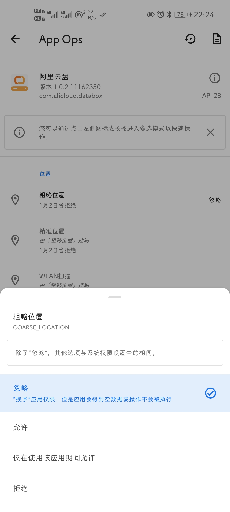